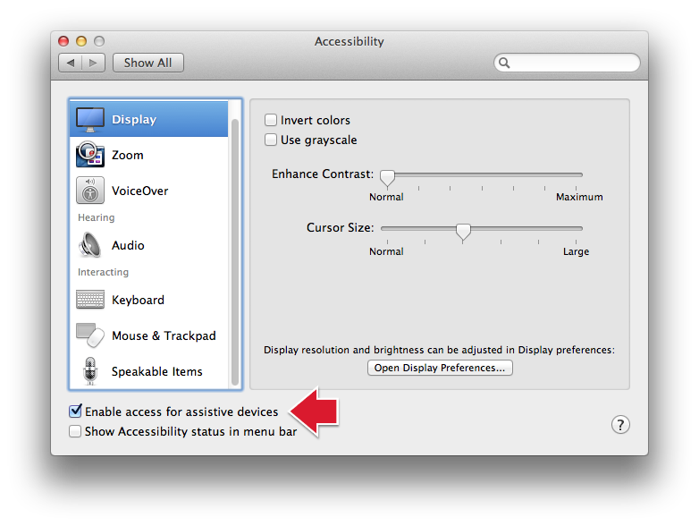
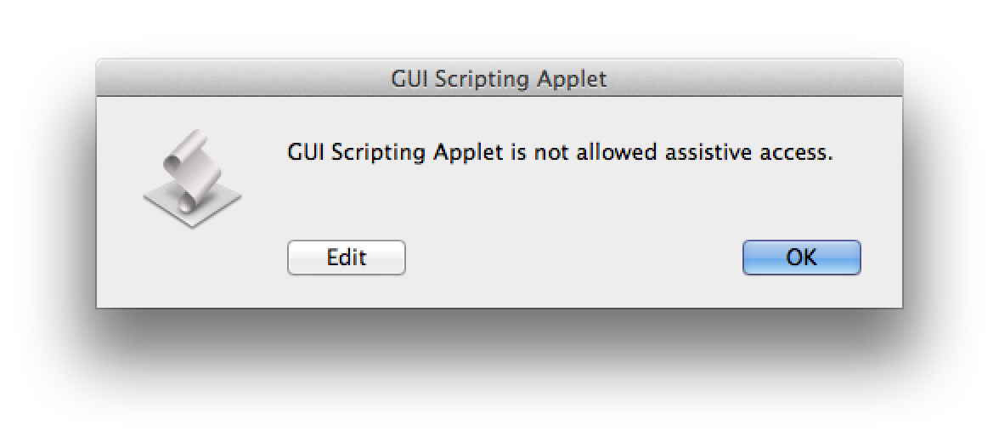
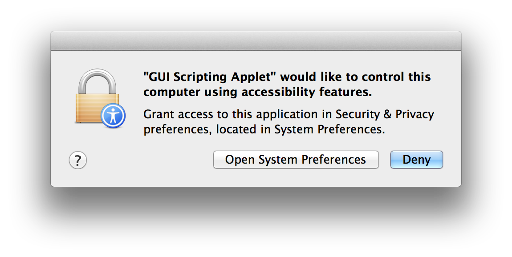
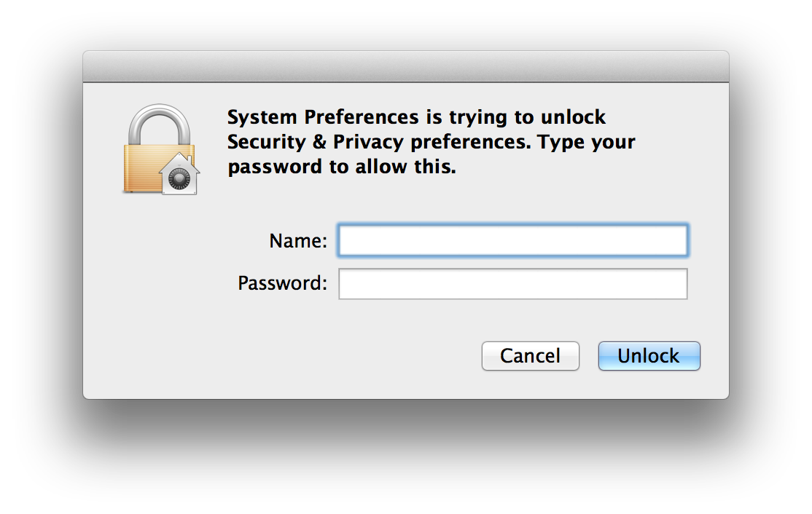
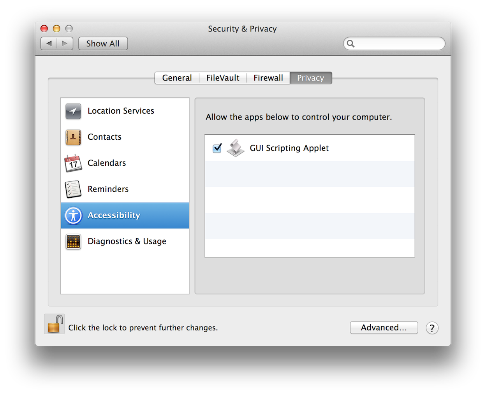
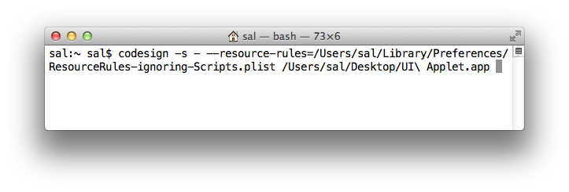

Developers have often relied upon AppleScript’s ability to control the user-interface, to provide an automation solution when no direct scripting support of an application or process was available. While this valued ability continues to be fully supported in Mavericks, the enhanced security focus of the new OS requires a few changes in how scripters access and apply the Accessibility frameworks.
In versions of OS X prior to Mavericks (v10.9), the ability to control the user-interface via AppleScript was determined by the state of a checkbox located in the Accessibility system preference pane. (⬇ see below)

(⬆ see above) The Accessibility system preference pane in OS X Mountain Lion (v10.8). Note the checkbox for enabling control of the user-interface via the accessibility frameworks.
If the checkbox titled “Enable access for assistive devices” (⬆ see above) was selected, you could run AppleScript scripts, applets, and droplets that would simulate a user’s actions, such as selecting a menu item, or pressing a dialog button.
In OS X Mavericks, security controls are more granular, requiring the individual addition of applications, or automation applets that script the accessibility frameworks, to an approval list, displayed in the Security & Privacy system preference pane. (⬇ see below)
(⬆ see above) The Accessibility Access List located in Security & Privacy system preference pane of OS X Mavericks (v10.9).
Applications (scripts, applets, etc.) are added to the list either through an integrated approval process, triggered when they first attempt to execute, or by an administrative user proactively dragging their icons into the list.
The following is an example of how the new security protocols for accessing the Accessibility frameworks via AppleScript, are implemented.
In this example, an AppleScript applet titled GUI Scripting Applet contains AppleScript statements for controlling the user-interface of OS X. When the applet is launched, the following dialog will appear: (⬇ see below)

The error dialog (⬆ see above) indicates that access by the applet to the assistive frameworks has been denied. Click the OK button and a second dialog appears: (⬇ see below)

The second dialog (⬆ see above) announces that the applet you attempted to run, contains code that targets the accessibility frameworks, and that such access can be granted in the Security & Privacy system preference pane. The dialog provides button options to either:
- refuse access to the applet, by clicking the Deny button in the dialog; or…
- to begin the process of granting access for the applet, by clicking the Open System Preferences button.
Clicking the Open System Preferences button in the dialog (see above), will open the System Preferences application and display the Accessibility section in the Security & Privacy preference pane. Note that the applet will be already added to the access list, but the checkbox next to its name is not selected. (⬇ see below)
In order to add items to the access list, or to edit the status of items already in the access list, you must provide an administrative user name and password. Click the lock icon at the lower left of the System Preferences window (⬆ see above) to summon the system authentication dialog: (⬇ see below)

Enter an administrative unser name and password in the dialog, click the Unlock button, and the preference pane will be ready for editing: (⬇ see below)
To grant access by the applet to the accessibility frameworks, select the checkbox next to applet’s name: (⬇ see below)

And finally, click the lock icon again, to secure the preference pane: (⬇ see below)
In OS X Mavericks, AppleScript applications ("applets") that use Accessibility features may ask for the same information each time you use them, appearing not to remember the settings you previously entered.
This repetition occurs because, by default, applets that use Accessibility features in OS X Mavericks do not save their properties when run. Applets that save their properties modify their own contents in order to save that information. This self-modification makes the applet appear to OS X as a different app each time it is executed, thereby triggering the authorization process repeatedly.
If you have an applet that requires both access to the Accessibility frameworks, and persistent property values, follow these instructions to sign the applet so that it works without requiring repeated re-authorization.
Important: Signing an applet using the following method introduces a security vulnerability that could allow malicious software to use Accessibility without user permission.
Download and install a property list file:
- Click this link to download an archive of a special property list file (plist): ResourceRules-ignoring-Scripts.plist
- Unpack the archive, and place the downloaded property list file in the Preferences folder in your Library folder: (~/Library/Preferences)
Tip: To access your Library folder, switch to the Finder, and hold down the Option key on your keyboard, and select Library from the Go menu.
Use the Terminal application to sign and register the applet:
- Launch the Terminal application
- Enter and execute the following command, substituting the correct actual path for both the property list file and the targeted AppleScript applet:
codesign -s - --resource-rules=/Users/YourUserNameHere/Library/Preferences/ResourceRules-ignoring-Scripts.plist /path/to/applet.app
NOTE: If you have your own signing identity, you may use that identity in place of “-” for the -s option.

(⬆ see above) The signing command string in a Terminal window. Note the use of the backslash character (\) to escape the space in the applet name. All spaces within paths must be escaped in the command string.